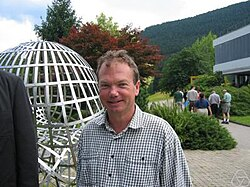

Jean-Christophe Yoccoz | |
|---|---|
 Jean-Christophe Yoccoz in 2005 | |
| Born | 29 May 1957 |
| Died | 3 September 2016 (aged 59) Paris, France |
| Education | Lycée Louis-le-Grand |
| Alma mater | École normale supérieure École Polytechnique |
| Known for | Dynamical systems Yoccoz puzzle |
| Awards | Salem Prize (1988) Fields Medal (1994) |
| Scientific career | |
| Fields | Mathematics |
| Institutions | Centre de mathématiques Laurent-Schwartz Paris-Sud 11 University Collège de France |
| Michael Herman | |
Doctoral students | Sylvain Crovisier Ricardo Pérez-Marco |
| Website | www |
Jean-Christophe Yoccoz (29 May 1957 – 3 September 2016) was a French mathematician. He was awarded a Fields Medal in 1994, for his work on dynamical systems.[1][2]
Yoccoz attended the Lycée Louis-le-Grand,[3] during which time he was a silver medalist at the 1973 International Mathematical Olympiad and a gold medalist in 1974.[4][5] He entered the École Normale Supérieure in 1975, and completed an agrégation in mathematics in 1977.[6]
Yaccoz next completed a civil alternative to French military service, which he served at Instituto Nacional de Matemática Pura e Aplicada, Brazil.[7] He then completed his PhD under Michael Herman in 1985 at Centre de mathématiques Laurent-Schwartz, which is a research unit jointly operated by the French National Center for Scientific Research (CNRS) and École Polytechnique.[6][8][9]
He took up a position at the University of Paris-Sud in 1987, and became a professor at the Collège de France in 1997, where he remained until his death.[2] He was a member of Bourbaki.[10]
Yoccoz won the Salem Prize in 1988. He was an invited speaker at the International Congress of Mathematicians in 1990 at Kyoto,[11] and was awarded the Fields Medal at the International Congress of Mathematicians in 1994 in Zürich.[12][11] He joined the French Academy of Sciences and Brazilian Academy of Sciences in 1994, became a chevalier in the French Legion of Honor in 1995, and was awarded the Grand Cross of the Brazilian National Order of Scientific Merit in 1998.[5]
Yoccoz's worked on the theory of dynamical systems. His contributions include advances to KAM theory, and the introduction of the method of Yoccoz puzzles, a combinatorial technique which proved useful to the study of Julia sets.[5]
{kind=link}